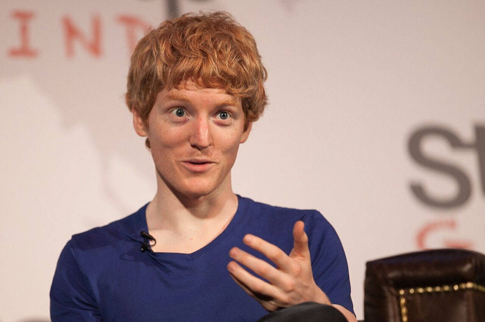
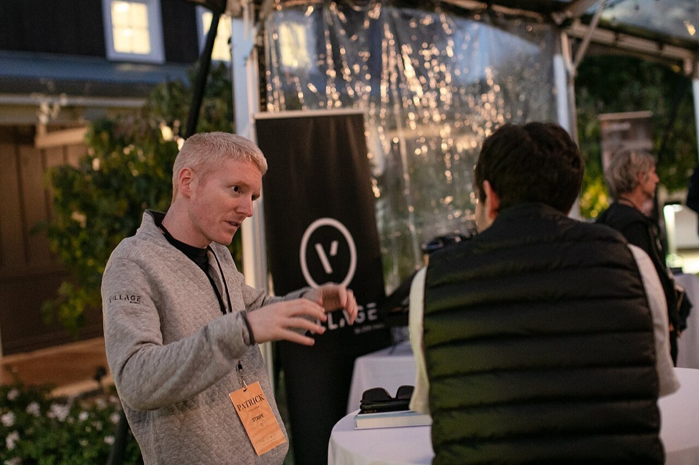
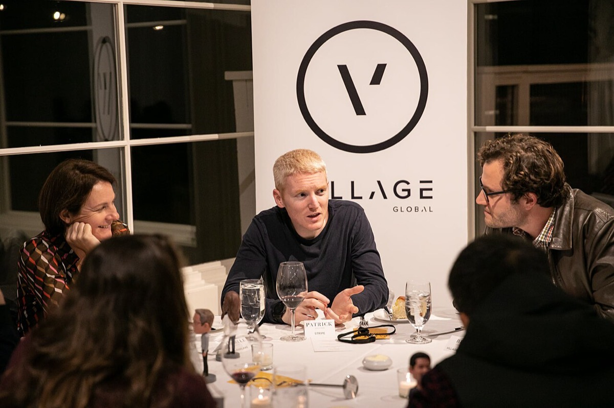
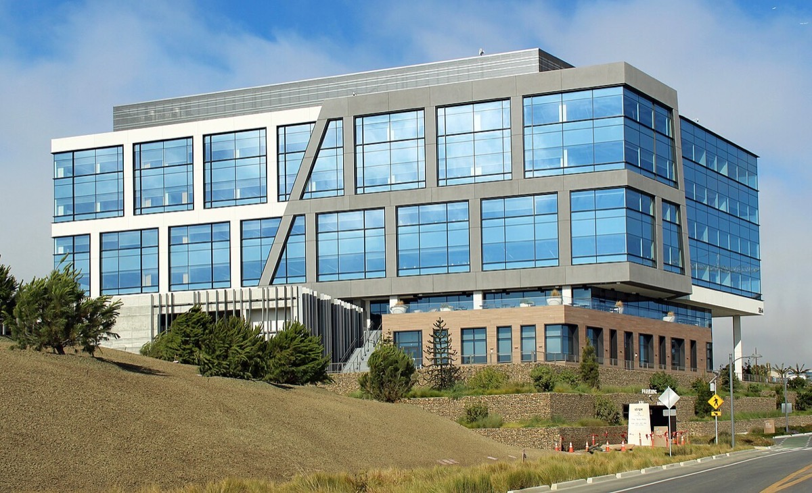
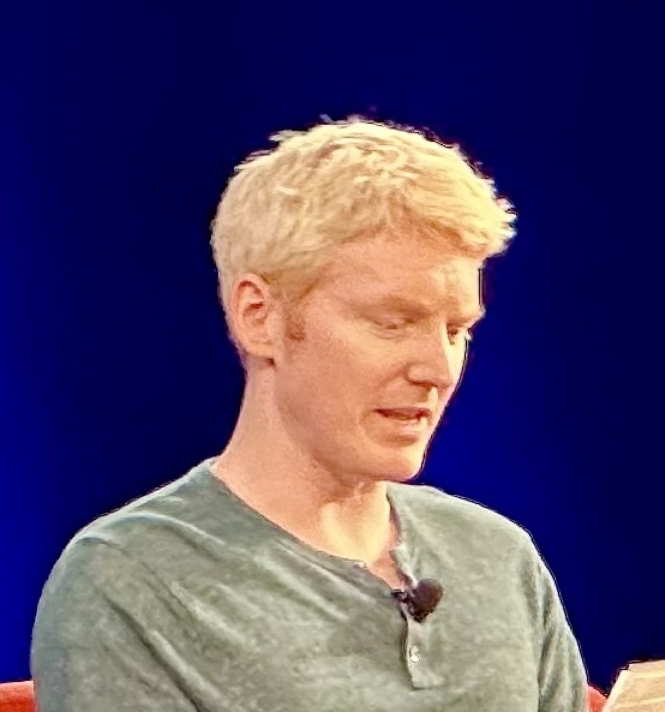

判断は二つである。第一に、Patrick Collison（CEO）が共同で選んだ「非上場のまま従業員流動性を出す」経路を、テンダー示唆評価の上昇として Series H 優先株の回復と読むか。第二に、本人が共同設計した Fast Grants の資金判断を、NIH の典型判断より短いと確定してよいか。
改稿日 2026年11月11日（初稿 2026年9月26日）。本ページは本人の意思決定2件の検証に限定する。会社の TPV・製品面の詳細は stripe_research_260727.html に置く。年表の満年齢は生年月日1988年9月9日からの年差である。
先に結論を置く。
1. 本人の選択は「IPOではなく非上場流動性」であり、テンダー上昇は優先株回復ではない。2023年1月に Patrick と John は従業員へ次を伝えた。1年以内に IPO か二次売却かを決める、という内容である（CNBC報道・single-source）。2023年3月の Series I（優先株 $50B（約7.0兆円）・$6.5B 超（約9,100億円））について会社公式は用途を従業員流動性と株式報酬の源泉税に限った。「事業運営にこの資本は不要」とも書いた。公式コメントは John 名義である。経路の提示は兄弟共同であり、Patrick は CEO として当該非上場経路を維持した。その後のテンダー示唆は $65B（約9.8兆円）→$91.5B（約14兆円）→$159B（約24兆円）と上がる。Series I 以降に優先株ポストマネーを $50B 超へ付け直した公開ラウンドは無い463878943。
2. Fast Grants が NIH より判断が速い、とは現時点で確定できない。本人共著の回顧は設計目標を判断48時間・着金数日後とする。初回ラウンドの交付は48時間以内、後期は2週間以内と書く。NIH については「成功申請は通常10〜20人・3段階の審査」と手続の厚さを記す。「典型判断200〜600日」という日数対照は回顧原文に無い。NIH 授与通知（例: NINDS で締切後8〜20か月）は判断後の手続きを含む別指標である。したがって NIH 対比の速度優位は判定不能とする1240。
読者と判断：Patrick が選んだ非上場流動性経路の結果を、テンダー価格で「優先株が回復した」と読むか。Fast Grants の判断速度を、NIH より短いと確定して扱うか。
分解：物理的制約はカード承認・清算・チャージバックの時間と、銀行規制が求めるリスク資本である。お金の流れのうち公開で追えるのは優先株の発行価格、テンダー示唆評価、助成の累計である。利得の帰属は創業者（本人含む）・従業員・優先株投資家・加盟店・受給研究室に分かれる。法と強制力はカードネットワーク規則と各国の決済ライセンスである。時間は本人が選ぶ IPO／テンダーの間隔と、助成の審査日数である。



主張の検証に使う日付を中心に並べた。日付の右は満年齢である。

2023年1月、CNBC は次を報じた。Patrick と John が従業員に、1年以内に上場か二次売却かを決めると伝えた、と。助言には Goldman Sachs と J.P. Morgan が関与した、とも書く（報道、single-source）46。
2023年3月15日の Stripe 公式ニュースルームは次を記す。Series I は $6.5B 超（約9,100億円）、評価 $50B（約7.0兆円）。資金の用途は「current and former employees」への流動性と、「employee withholding tax obligations related to equity awards」。新株発行は流動性で回収する自社株の消却で相殺する、と書く。「Stripe does not need this capital to run its business」と明記する。公式コメントは John（共同創業者・President）名義である。Reuters は内訳を約 $3.5B（約4,900億円）が税負担、残りが従業員買取りと報じた（single-source の内訳）387。
| 出来事 | 年月 | 評価額 | 日本円 | 価格の種類 | 主用途（開示） |
|---|---|---|---|---|---|
| Series H | 2021-03 | $95B | 約10兆円 | 優先株ポストマネー | 成長・欧州投資を名目に含む一次調達6 |
| Series I | 2023-03 | $50B | 約7.0兆円 | 優先株ポストマネー | 流動性＋源泉税。事業運営には不要387 |
| 従業員テンダー | 2024-02 | $65B | 約9.8兆円 | 二次流通の示唆 | 従業員流動性8 |
| 従業員テンダー | 2025-02 | $91.5B | 約14兆円 | 二次流通の示唆 | 従業員流動性＋自己株買い9 |
| 従業員テンダー | 2026-02 | $159B | 約24兆円 | 二次流通の示唆 | 従業員流動性＋自己株買い1043 |
ピーク比の下落率は（$95B − $50B）÷ $50B ではなく、$95B を分母にして約47%である。テンダー $159B（2026-02）は Series H を上回るが、種類が異なる。Series I 以降に優先株のポストマネーを $50B 超へ付け直した公開資料は、本調査の範囲では見当たらない。本人の経路選択の結果として残るのは、優先株系列の切り下げと、テンダー系列の上昇である743。
判定：主張1は支持。支持の内容は「本人が非上場流動性経路を実行した」ことと、「その後のテンダー上昇を優先株回復と同一視できない」ことまでである。創業者持分の希薄化率は非開示のため範囲外とする。

Fast Grants（2020年開始、Collison・Cowen・Patrick Hsu）は Mercatus Center 経由で運用された。本人共著の回顧（Future）が実際に書く内容は次である。(1) 設計目標は申請30分未満・資金判断48時間以内・資金送付は数日後。(2) 初回ラウンドは48時間以内に交付し、後期ラウンドは追加確認を要するものが多く2週間以内だった。(3) 成功した NIH 申請は通常10〜20人の科学者・プログラム担当が3段階で審査する、と手続の厚さを記す。回顧原文を検索しても「NIH の典型判断が200〜600日」という定量対照は無い。したがって従来ページが置いていた NIH 日数対照は根拠にできない12。
| 指標 | 数値 | 出典上の位置づけ |
|---|---|---|
| Fast Grants 判断目標 | 48時間以内 | 設計目標。実績分布ではない12 |
| Fast Grants 初回交付 | 48時間以内 | 回顧の本人申告（single-source）12 |
| Fast Grants 後期交付 | 2週間以内 | 回顧の本人申告（single-source）12 |
| NIH 審査体制（回顧） | 10〜20人・3段階 | 手続の厚さ。判断日数ではない12 |
| NIH「200〜600日」 | N/A | 回顧原文に当該定量対照は無い12 |
| 受給者調査（回顧内） | 64%／32% | 無しでは研究が起きなかった／数か月加速。本人共著・single-source12 |
判定不能の理由。主張2を支持するには Fast Grants 側の中央判断日数（一次分布）が必要である。NIH 側の判断日数（decision。授与通知ではない）の一次系列も必要である。NINDS の授与通知（締切後8〜20か月）と NHGRI の約9か月は判断後手続を含む全行程である。48時間目標や初回交付の申告と並べると指標がずれる。累計金額と NIH／NSF 年次予算の比も時点不一致のため、代替可否の一般判定には使わない404439。
判定：主張2は判定不能。本人共著が示す初回48時間以内・後期2週間以内は記録するが、NIH 判断日数との定量比較を支える一次データが揃っていない。
主張の棄却条件と、判定から外した項目をここに集約する。
棄却条件は三つである。(1) Series I 以降に優先株ポストマネーが $50B（約7.0兆円）を超える公開ラウンドが発表される。(2) 会社が Series I の主用途を事業運営・成長投資だと公式に訂正する。(3) 本人が IPO 等で優先株系列を $50B 超へ付け直す。2023-01の従業員向け伝達は報道（single-source）であり、公式全文の一次開示ではない。2023-03の公式文は流動性＋源泉税であり、事業運営には不要と明記する。テンダー $159B（約24兆円）は二次流通の示唆であり、優先株系列の付け直しではない。創業者持分の希薄化率と、テンダー価格への清算優先の織り込みは非開示のため判定外である4638743。
将来の支持／棄却に使う条件は次である。Fast Grants の中央判断日数の一次分布と NIH の判断日数の一次系列が揃う。そのうえで前者が後者と同等以上になる場合に棄却する。現状は両方とも未開示のため判定不能とする。資金送付の「数日後」と NIH 授与通知（8〜20か月）は判断と別指標のため、比較の左右に混ぜない。回顧内の受給者調査（64%／32%）は本人共著・single-source である。NIH 速度比較の代替証拠には使わない。2022年11月の約14%人員削減は主張1・2の反証条件ではない124027。
Progress Studies（2019-07-30、Cowen と共著）は、進歩そのものが十分に研究されていないと書く。Fast Grants はその速度実験、Arc は長期の制度設計である。Emergent Ventures は Mercatus／Cowen 側の助成であり、Fast Grants がそのインフラを借りた。Collison は GP として運用する VC ではない。1517 Fund とは別系統である111214。
主張の検証に使う発言に限る。
本文の主要な金額を、各年の年平均レートで円にした。全て2000年以降の米ドルのため、今の物価と給料による換算は省略した。
| 本文の金額 | 年 | 当時のレートで円 | 今の物価で円 | 給料で見た重み | 意味 |
|---|---|---|---|---|---|
| Auctomatic の売却 約 $5M 超 | 2008 | 約5.2億円超 | — | 当時の大卒初任給の約220年分 | 19歳の本人が関わった最初の売却であり、Series G の調達額の約50分の1である3。 |
| Series G $250M | 2019 | 約270億円 | — | — | 評価 $35B（約3.8兆円）に対する調達額の比率は約0.7%である25。 |
| Fast Grants 累計 $50M 超 | 2020–2021 | 約53億〜55億円超 | — | — | NIH の2021年度予算 約 $42.936B（約4.7兆円）の約0.12%にとどまる1239。 |
| Series H $600M | 2021 | 約660億円 | — | — | 評価 $95B に対する調達額の比率は約0.6%である6。 |
| Series H 評価 $95B | 2021 | 約10兆円 | — | — | 優先株価格のピークであり、主張1の上限点である6。 |
| Arc Institute $650M 超 | 2021 | 約710億円超 | — | — | Fast Grants 累計の約13倍の資金を長期の研究機関に充てた13。 |
| Series I $6.5B 超 | 2023 | 約9,100億円 | — | — | 評価額の約13%に当たる資金を、事業運営ではなく従業員流動性と源泉税に充てた38。 |
| うち税負担 約 $3.5B | 2023 | 約4,900億円 | — | — | Series I 調達額の約54%であり、報道による内訳である7。 |
| Series I 評価 $50B | 2023 | 約7.0兆円 | — | — | Series H の評価をドル建てで約47%下回る38。 |
| テンダー示唆 $65B | 2024 | 約9.8兆円 | — | — | テンダー系列の始点であり、Series I の評価のドル建てで1.3倍である8。 |
| TPV $1.4T | 2024 | 約210兆円 | — | — | 同年のテンダー示唆評価のドル建てで約22倍の決済額である45。 |
| テンダー示唆 $159B | 2026 | 約24兆円 | — | — | Series I の評価のドル建てで約3.2倍であるが、優先株の付け直しではない43。 |
米ドルは各年の年平均レートで円にした。1ドルあたり2008年103.4円／2019年109.0円／2020年106.8円／2021年109.8円／2023年140.5円／2024年151.5円／2025年149.6円である。2026年の年平均は換算表に無いため、2025年の149.6円で代用した。2000年以降の日本の物価上昇は2割以内であるため、物価と給料による換算は省略した。年ごとにレートが異なるため、円建ての倍率はドル建ての倍率と一致しない（例: $159B÷$50B は約3.2倍、円建ては約3.4倍）。
公開数値で確認できる利得は次である。(1) 本人が選んだ Series I／テンダー経路で流動性を得た現・元従業員。(2) テンダーに参加した二次投資家（Thrive、Coatue、a16z 等の報道）。(3) Fast Grants／Arc の受給研究室。創業者持分の希薄化率と、Stripe 利益から科学への直接送金比率は非開示である38912。


.jpg){kind=link}
.jpg){kind=link}